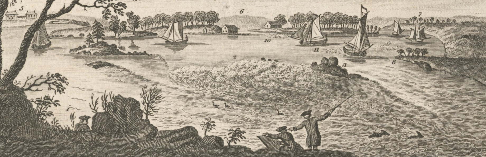

East River, New York
Hellegat
Between the river's breaths

You have reached Hellegat, a spot in New York's East River once feared by mariners. You will wait, like sailors past, for slack water.
The timer below counts down to when slack water begins. When the time reaches 0 the slack water will reward you with an image from the depths, surfacing and then sinking back forever.
While you wait for the next slack, you can observe the river's rise and fall, or view the animated map that shows the tide reaching Hellegat from two directions, and you can learn more about the project here.
Next slack
…
Today's slack
You have reached Hellegat, an art project by Maria Saha that follows the movement of New York's East River at its most dangerous spot. You have happened to arrive during slack water. At this time, the river becomes calm and chooses an image for us to view briefly. When the timer runs out, the image will sink back into the water forever. When it does, you will be able to learn more about this project and the river.
until the river exhales
The river's image couldn't be reached this time.
The Battery
…
harbor side
Kings Point
…
Sound side
Current at Hell Gate
…
Loading from NOAA…
Live Water levels measured by NOAA CO-OPS: The Battery 8518750, Kings Point 8516945. The water ahead, the current, and slack times are predicted from NOAA data (Hell Gate NYH1924).